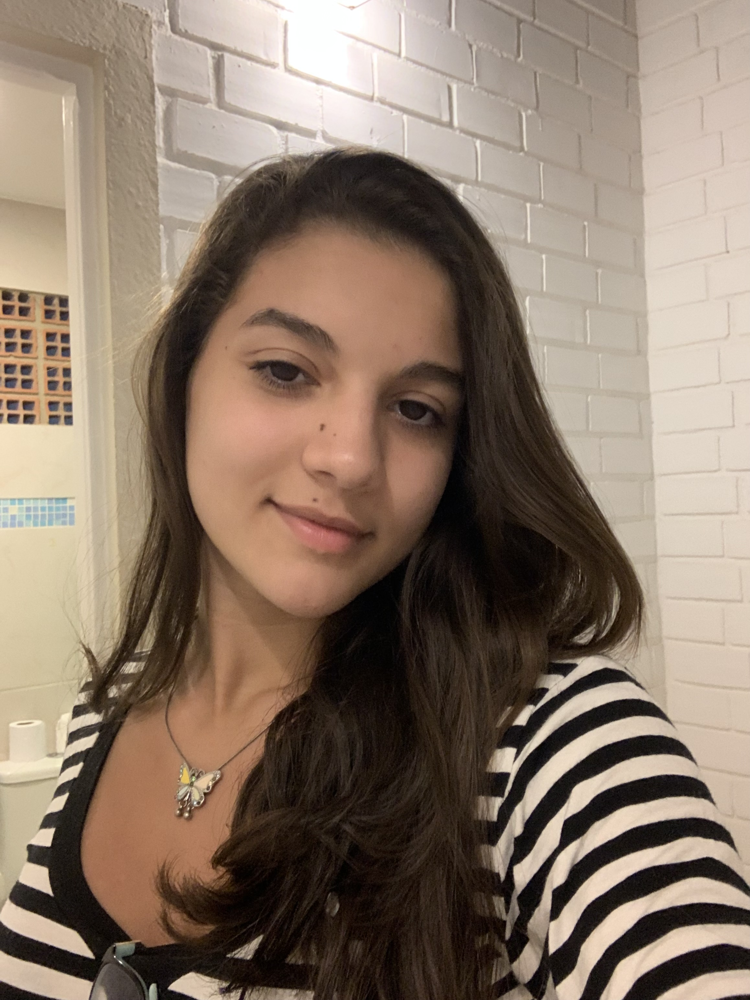

Alice Peruniz Oliveira

Geral / Curiosidades:
- Cidade natal - Olinda
- Idade - 19 anos
- Aniversário - 5 de abril
- Time - Sport
- Comida favorita - Sushi
Por quê escolhi Ciência da Computação:
Minha decisão definitiva de curso foi meio de última hora
(mais precisamente: uma semana antes da abertura do Sisu),
mas sempre tive vontade de trabalhar com tecnologia, e também
vi que Ciência da Computação abria portas para oportunidades muito
boas. Então aqui estou, não me arrependo da escolha e estou amando
o curso.
Meus Hobbies
Leitura
- Livro favorito: Harry Potter e as Relíquias da Morte
- Gênero favorito: Fantasia / suspense
Natação
Estou mentindo se disser que nado com frequência. Mas durante todo o ensino médio eu praticava demais e amava participar de competições, então esse esporte tem um lugar no meu coração.
Musculação
Única atividade física que eu pratico atualmente
Música
Gosto de canto e de ouvir música. Já tentei aprender alguns instrumentos, como violão e piano, mas parei de praticar. Pra compensar, há pouco tempo ganhei um ukulele e estou aprendendo algumas músicas. Acho os instrumentos apaixonantes, mas nunca dominei nenhum.
Antes da faculdade...
Sempre morei em Limoeiro, uma cidade no interior, até que passei no Colégio Militar do Recife e tive que ir morar com minha avó em Vitória de Santo Antão (que ainda é interior, mas é bem mais perto de Recife).
Durante a pandemia, voltei para a casa dos meus pais, mas saí novamente pra vir morar em Recife quando passei na faculdade.
Minhas redes de comunicação:
/https://skoob.s3.amazonaws.com/livros/1200/HARRY_POTTER_E_AS_RELIQUIAS_DA_14423759701200SK1442375970B.jpg)